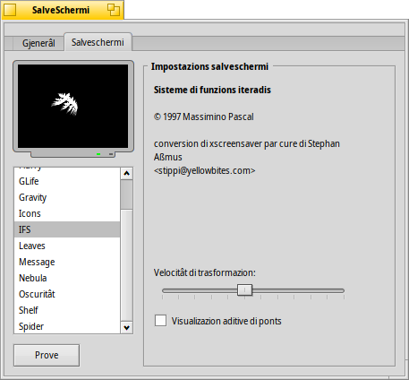

SalveSchermi
SalveSchermi
| Deskbar: | ||
| Posizion: | /boot/system/preferences/Screensaver | |
| Impostazions: | ~/config/settings/ScreenSaver_settings |
Il panel des preferencis dal SalveSchermi al è dividût in dôs schedis:
 Gjenerâl
Gjenerâl

La casele di selezion plui in alt e abilite/disabilite il salveschermi.
Cul cursôr subite sot, tu controlis trop timp di inativitât che si à di spietâ prime di fâ partî il salveschermi.
I doi cursôrs sucessîfs si puedin doprâ dome dopo vê ativât la lôr casele di selezion:
Un cursôr al determine dopo trops minûts che il schermi al ven distudât.
Chel altri, dopo trops minûts domandâ une peraule di ordin par sblocâ la machine.
Fasint clic su angui diferents dai doi visôrs in bas, tu disis al sisteme cuant fâ partî daurman il salveschermi o cuant impedî che al jentri in funzion se si lasse il mouse tal angul indicât. Un clic tal mieç dai visôrs par tornâ a disabilitâ chestis funzions.
Salveschermis

La seconde schede e mostre une liste di salveschermis instalâts e lis lôr impostazions individuâls. Tu puedis provâ lis tôs impostazions cul boton sot de liste.
I gnûfs salveschermis che no rivin di un regolâr pachet .hpkg (o une sô part), a puedin jessi instalâts se si ju copie intes lôr rispetivis cartelis non-packaged (viôt l'argoment Disposizion dal Filesystem):
| /boot/system/non-packaged/add-ons/Screen Savers/ | par salveschermis disponibii par ducj i utents. | |
| /boot/home/config/non-packaged/add-ons/Screen Savers/ | par salveschermis disponibii dome par te. |